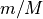

mplearn.graphical_model.MPGraph
- class mplearn.graphical_model.MPGraph(base_graph, *, minipatch_m_ratio=0.05, minipatch_n_ratio=0.5, max_k=None, assume_centered=True, ray_configure=None, n_jobs=- 1, parallel_batch_size=200, parallel_post_processing=False, low_memory_mode=False, random_state=0, verbose=0)[source]
Gaussian graphical model selection with Minipatch Graph.
Gaussian graphical model selection refers to the problem of inferring the edge set (or sparsity patterns of the precision matrix) from obersved data. This is a meta-algorithm that repeatedly fits base graph selectors to many random subsets of both observations and features (minipatches) in parallel and ensembles the selection events from all these base selectors. At the end of the algorithm, the final edge selection frequency is computed for each pair of nodes (i, j) as the number of times (i, j) are sampled together and the base graph selector puts an edge between them divided by the number of times (i, j) are sampled together into minipatches. The algorithm eventually selects the set of edges whose selection frequency is above a certain threshold.
Important note:
MPGraphassumes that all necessary pre-processing steps prior to Gaussian graphical model selection have already been carried out on the input data X. For instance, data standardization (centering and/or scaling) needs to be performed on the raw data prior to callingfit()if such data pre-processing is deemed necessary by the users.- Parameters
- base_graph
estimatorinstance A Gaussian graphical model selector with a
fitmethod that provides an estimate of either the precision matrix or its sparsity pattern. See Notes for more details.- minipatch_m_ratiofloat, default=0.05
The fraction of features/nodes to draw from X uniformly at random without replacement to train each base graph selector. Specifically,
round(minipatch_m_ratio * X.shape[1])nodes are randomly drawn into each minipatch. Note that the same node won’t appear twice in a given minipatch (due to sampling without replacement), but a node can appear in multiple minipatches.minipatch_m_ratioshould be in the interval (0.0, 1.0]. See Notes for more details.- minipatch_n_ratiofloat, default=0.5
The fraction of observations to draw from X uniformly at random without replacement to train each base graph selector. Specifically,
round(minipatch_n_ratio * X.shape[0])observations are randomly drawn into each minipatch. Note that the same observation won’t appear twice in a given minipatch (due to sampling without replacement), but an observation can appear in multiple minipatches.minipatch_n_ratioshould be in the interval (0.0, 1.0]. See Notes for more details.- max_kint, default=None.
The total number of minipatches to use for training the meta-algorithm. If set to
None, the algorithm will automatically computemax_kto beceil(1 / minipatch_m_ratio) * 50.- assume_centeredbool, default=True.
If False, each column of X is centered to have a mean of zero.
- ray_configuredict, default=None.
Dictionary with parameter names (
str) as keys and specific parameter settings as values. This specifies the parameter values for the Ray framework, which is used to parallelize computation over minipatches. Unless set toNone,ray_configureis required to have at least one of two keys:'memory'and'object_store_memory'. If set toNone, Ray would automatically detect the available memory resources on the system. See the documentation of Ray for more details. See Notes for further discussion.'memory': int. This specifies the amount of reservable memory resource (in Gigabytes) to create.'object_store_memory': int. The amount of memory (in Gigabytes) to start the object store with.
- n_jobsint, default=-1.
The number of jobs to run in parallel.
-1means using all processors.- parallel_batch_sizeint, default=200.
The number of tasks to dispatch at once to each worker. It is recommended to leave this at the default value. See documentation of
joblib.Parallelfor more details. See Notes for further discussion.- parallel_post_processingbool, default=False.
Whether to use parallelization for aggregating the selection events from all minipatches. Using parallelization for this task can reduce the overall runtime, but might consume more memory.
- low_memory_modebool, default=False.
Whether to clear some non-essential intermediate variables to save memory.
- random_stateint, default=0.
Controls both the randomness of sampling observations and sampling features into minipatches.
- verboseint, default=0.
Controls the verbosity: the higher, more messages are displayed.
- base_graph
- Attributes
- N_int
The number of observations in the input data.
- M_int
The number of features/nodes in the input data.
- Pi_hat_ndarray of shape (M*(M-1)/2,)
The final edge selection frequency between each pair of nodes (i, j), where . Specifically,
Pi_hat_[0]represents the selection frequency of the edge between the node pair (0, 1),Pi_hat_[1]represents the selection frequency of the edge between the node pair (0, 2), so on and so forth. Each element is in the interval [0.0, 1.0]. A larger value indicates that the corresponding edge is more stable.- S_val_vec_ndarray of shape (M*(M-1)/2,)
The total number of times each node pair (i, j) is sampled together into minipatches and there is an estimated edge between them as determined by the base graph selectors. The indexing of
S_val_vec_is the same asPi_hat_. Iflow_memory_mode=True, this would be set toNone.- D_val_vec_ndarray of shape (M*(M-1)/2,)
The total number of times each node pair (i, j) is sampled together into minipatches. The indexing of
D_val_vec_is the same asPi_hat_. Iflow_memory_mode=True, this would be set toNone.
Notes
More details about
base_graph: The MPGraph meta-algorithm can be employed with a wide variety of thresholded Gaussian graphical model selection techniques as the base selector on minipatches. This package currently provides a highly effective base selector classes -mplearn.graphical_model.base_graph.ThresholdedGraphicalLasso. However, user-supplied selector is also allowed as long as the selector class follows the same structure as the base graph selector mentioned above (i.e. has afitmethod that provides an estimate of either the precision matrix or its sparsity patterns).More details about choice of minipatch size: Suppose the data X has N observations (rows) and M nodes (columns). Following the notations of [1], a minipatch is obtained by subsampling n observations and m features simultaneously without replacement from X using some form of randomization. The parameter
minipatch_m_ratiorepresents  andminipatch_n_ratiorepresents . As demonstrated in [1], the performance
of the meta-algorithm is robust for a sensible range of n and m values. The general rule
of thumb is to take m to be 5% to 10% of M and then pick n relative to
m such that it well exceeds the sample complexity of the base graph selector used.
. As demonstrated in [1], the performance
of the meta-algorithm is robust for a sensible range of n and m values. The general rule
of thumb is to take m to be 5% to 10% of M and then pick n relative to
m such that it well exceeds the sample complexity of the base graph selector used.More details about the parallelization framework: this software uses the Ray framework for parallelization. Specifically,
ray_configure,n_jobs, andparallel_batch_sizetogether controls the behavior of the parallel backend. It is generally okay to leave these at default values. However, by the nature of parallelization framework, the computational speed can vary across systems with different hardware resources. For the most optimal performance, it is sometimes helpful to change these parameter values accordingly based on the available computing resources of your specific computer system.We refer the users to the original paper [1] for the detailed algorithm.
References
- 1
Yao, T. and Wang, M. and Allen, G. I., “Gaussian Graphical Model Selection for Huge Data via Minipatch Learning”, arXiv:2110.12067.
Examples
The following example shows how to infer the structure of the Gaussian graphical model (sparsity pattern of the precision matrix) from observed data.
>>> import numpy as np >>> from mplearn.graphical_model.base_graph import ThresholdedGraphicalLasso >>> from mplearn.graphical_model import MPGraph >>> N, M = 1000, 500 >>> precision = 1.25*np.identity(M) + np.diag(0.5 * np.ones(M - 1), 1) + np.diag(0.5 * np.ones(M - 1), -1) >>> X = np.random.RandomState(0).multivariate_normal(np.zeros(M), np.linalg.inv(precision), size=N) >>> base_graph = ThresholdedGraphicalLasso() >>> mpgraph = MPGraph(base_graph=base_graph, ... minipatch_m_ratio=(50. / M), ... minipatch_n_ratio=(60. / N), ... max_k=1000, ... parallel_post_processing=True, ... verbose=0) >>> fitted_mpgraph = mpgraph.fit(X) >>> estimated_graph = fitted_mpgraph.get_support(support_type="sparse_matrix", pi_thr=0.5)
- fit(X, y=None)[source]
Fit the MPGraph model to X.
- Parameters
- Xndarray of shape (n_samples, n_features)
Data from which to infer the graphical model structure. Note that data frame or sparse matrix format are not allowed. Also, the dtype of X has to be numeric (e.g. float, int). NaN/Inf are not allowed in the input.
- yIgnored.
Not used, present for API consistency.
- Returns
- selfobject
Fitted estimator.
- get_params(deep=True)
Get parameters for this estimator.
- Parameters
- deepbool, default=True
If True, will return the parameters for this estimator and contained subobjects that are estimators.
- Returns
- paramsdict
Parameter names mapped to their values.
- get_support(support_type='mask', pi_thr=0.5)[source]
Get a mask, indicator, matrix, or node pair index, of the edges selected by the meta-algorithm.
- Parameters
- support_type{‘mask’, ‘indicator’, ‘sparse_matrix’, ‘node_pair’}, default=’mask’
Specify the format in which the estimated graph structure is returned.
- pi_thrfloat, default=0.5
The selection frequency threshold above which an edge is considered selected. A larger threshold indicates a more stringent criterion. For many problems, setting this threshold to 0.5 is a reasonable choice. Note that this threshold must be within (0.0, 1.0).
- Returns
- supportndarray or coo_matrix
If
support_type='mask', then a boolean array of shape (M*(M-1)/2,) indicating presence of edges between each pair of nodes (i, j), where . Specifically,support[0]=Trueiff there is an edge between the node pair (0, 1),support[1]=Trueiff there is an edge between the node pair (0, 2), so on and so forth.If
support_type='indicator', then a binary array of shape (M*(M-1)/2, ) indicating presence of edges between each pair of nodes (i, j), .
Specifically,
.
Specifically, support[0]=1if there is an edge between the node pair (0, 1) andsupport[0]=0otherwise. The indexing is the same as ‘mask’.If
support_type='sparse_matrix', then a sparse matrix in COO format (coo_matrix) of shape (M, M) representing the adjacency matrix of the estimated graph structure. The nonzero entries of this sparse matrix indicate presence of edges. Note that one may convert the adjacency matrix to a dense array by usingsupport.toarray(). However, converting to dense array can consume a large amount of memory for large M, so it is usually desirable to keep this in sparse matrix format.If
support_type='node_pair', then a ndarray of shape (# selected edges, 2) representing node pairs (i, j) between which there is an estimated edge,.
Specifically, each row is a node pair with an estimated edge.
- set_params(**params)
Set the parameters of this estimator.
The method works on simple estimators as well as on nested objects. The latter have parameters of the form
<component>__<parameter>so that it’s possible to update each component of a nested object.- Parameters
- **paramsdict
Estimator parameters.
- Returns
- selfestimator instance
Estimator instance.